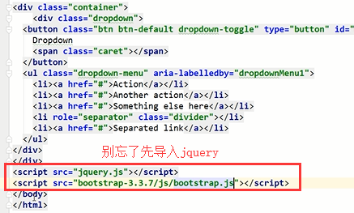

原文连接:https://www.cnblogs.com/changxin7/p/11524088.html
iconfont的使用：https://www.cnblogs.com/changxin7/p/11479216.html
Bootstrap介绍
Bootstrap是Twitter开源的基于HTML、CSS、JavaScript的前端框架。
它是为实现快速开发Web应用程序而设计的一套前端工具包。
它支持响应式布局，并且在V3版本之后坚持移动设备优先。
就是复制黏贴一把梭，html\css\js代码的封装组合
为什么要使用Bootstrap？
在Bootstrap出现之前：
命名：重复、复杂、无意义（想个名字费劲）
样式：重复、冗余、不规范、不和谐
页面：错乱、不规范、不和谐
在使用Bootstrap之后： 各种命名都统一并且规范化。 页面风格统一，画面和谐。
Bootstrap下载
官方地址：https://getbootstrap.com
中文地址：http://www.bootcss.com/
我们使用V3版本的Bootstrap，我们下载的是用于生产环境的Bootstrap。
Bootstrap环境搭建
目录结构：
bootstrap-3.3.7-dist/
├── css // CSS文件
│ ├── bootstrap-theme.css // Bootstrap主题样式文件,官方提供的，一般不用
│ ├── bootstrap-theme.css.map
│ ├── bootstrap-theme.min.css // 主题相关样式压缩文件
│ ├── bootstrap-theme.min.css.map
│ ├── bootstrap.css //引用的时候，引用这一个或者下面那个bootstrap.min.css文件就可以了
│ ├── bootstrap.css.map
│ ├── bootstrap.min.css // 核心CSS样式压缩文件，其他的文件都是在这个核心文件的基础上加了一些其他的样式
│ └── bootstrap.min.css.map
├── fonts // 字体文件
│ ├── glyphicons-halflings-regular.eot
│ ├── glyphicons-halflings-regular.svg
│ ├── glyphicons-halflings-regular.ttf
│ ├── glyphicons-halflings-regular.woff
│ └── glyphicons-halflings-regular.woff2
└── js // JS文件
├── bootstrap.js
├── bootstrap.min.js // 核心JS压缩文件
└── npm.js处理依赖
由于Bootstrap的某些组件依赖于jQuery，所以请确保下载对应版本的jQuery文件，来保证Bootstrap相关组件运行正常。
引入：
将下载解压的那个文件夹放到我们的项目目录下就能够使用了
可以把主题那些你用不到的css等文件删除。
然后引入一下就能用了，很简单
Bootstrap全局样式
排版、按钮、表格、表单、图片等我们常用的HTML元素，Bootstrap中都提供了全局样式。
我们只要在基本的HTML元素上通过设置class就能够应用上Bootstrap的样式，从而使我们的页面更美观和谐。
基础模板：简单看看结构
<!DOCTYPE html>
<html lang="zh-CN">
<head>
<meta charset="utf-8">
<meta http-equiv="X-UA-Compatible" content="IE=edge">
<meta name="viewport" content="width=device-width, initial-scale=1"> <!--页面宽度自适应设备的屏幕宽度-->
<!-- 上述3个meta标签*必须*放在最前面，任何其他内容都*必须*跟随其后！ -->
<title>Bootstrap 101 Template</title>
<!-- Bootstrap -->
<link href="https://cdn.jsdelivr.net/npm/bootstrap@3.3.7/dist/css/bootstrap.min.css" rel="stylesheet">
<!-- HTML5 shim 和 Respond.js 是为了让 IE8 支持 HTML5 元素和媒体查询（media queries）功能 -->
<!-- 警告：通过 file:// 协议（就是直接将 html 页面拖拽到浏览器中）访问页面时 Respond.js 不起作用 -->
<!--[if lt IE 9]>
<script src="https://cdn.jsdelivr.net/npm/html5shiv@3.7.3/dist/html5shiv.min.js"></script>
<script src="https://cdn.jsdelivr.net/npm/respond.js@1.4.2/dest/respond.min.js"></script>
<![endif]-->
</head>
<body>
<h1>你好，世界！</h1>
<!-- jQuery (Bootstrap 的所有 JavaScript 插件都依赖 jQuery，所以必须放在前边) -->
<script src="https://cdn.jsdelivr.net/npm/jquery@1.12.4/dist/jquery.min.js"></script>
<!-- 加载 Bootstrap 的所有 JavaScript 插件。你也可以根据需要只加载单个插件。 -->
<script src="https://cdn.jsdelivr.net/npm/bootstrap@3.3.7/dist/js/bootstrap.min.js"></script>
</body>
</html>
想让手机端能够显示完整的页面，就需要写上
使用栅格进行布局的时候注意人家bootstrap官网里面写的要求：写法就按照下面的来，写到布局容器里面，列是行里面的元素。
效果：
如果里面的列元素没有占满12份，那么右边就会空出来几份的宽度。
还有：
列偏移
关于媒体查询：
<!DOCTYPE html>
<html lang="en">
<head>
<meta charset="UTF-8">
<title>Title</title>
<meta name="viewport" content="width=device-width, initial-scale=1">
<style>
body {
margin: 0;
}
.c1 {
background-color: red;
height: 200px;
}
/*媒体查询，捕捉显示屏幕的宽度，来显示不同的定制效果*/
@media screen and (max-width: 700px) {
.c1 {
background-color: green;
}
}
</style>
</head>
<body>
<div class="c1">
</div>
</body>
</html>媒体查询的使用
<!DOCTYPE html>
<html lang="zh-CN">
<head>
<meta charset="utf-8">
<meta http-equiv="X-UA-Compatible" content="IE=edge">
<meta name="viewport" content="width=device-width, initial-scale=1">
<!-- 上述3个meta标签*必须*放在最前面，任何其他内容都*必须*跟随其后！ -->
<title>Bootstrap 101 Template</title>
<!-- Bootstrap -->
<link href="bootstrap/css/bootstrap.css" rel="stylesheet">
<style>
#con1{
/*background-color: red;*/
/*height: 600px;*/
}
.c1{
background-color: red;
height: 40px;
}
.c2{
background-color: green;
height: 40px;
}
@media screen and (min-width: 700px) {
.c1{
background-color: yellow;
height: 40px;
}
.c2{
background-color: blue;
height: 40px;
}
}
</style>
</head>
<body>
<!--<h1>你好，世界！</h1>-->
<!--<div id="con1" class="container"></div>-->
<!--<div id="con1" class="container-fluid">-->
<!--<div class="row">-->
<!--<div class="col-md-2 col-xs-2 c1 col-md-offset-1 col-xs-offset-1">-->
<!--</div>-->
<!--<div class="col-md-8 col-xs-8 c2">-->
<!--</div>-->
<!--</div>-->
<!--</div>-->
<div id="con1" class="container-fluid">
<div class="row">
<div class="col-md-2 col-xs-2 c1 col-md-offset-1 col-xs-offset-1">
</div>
<div class="col-md-8 col-xs-8 c2">
</div>
</div>
</div>
<!-- jQuery (Bootstrap 的所有 JavaScript 插件都依赖 jQuery，所以必须放在前边) -->
<script src="jquery.js"></script>
<!-- 加载 Bootstrap 的所有 JavaScript 插件。你也可以根据需要只加载单个插件。 -->
<script src="bootstrap/js/bootstrap.js"></script>
</body>
</html>标题相关
标题
<h1>一级标题36px</h1>
<h2>二级标题30px</h2>
<h3>三级标题24px</h3>
<h4>四级标题18px</h4>
<h5>五级标题14px</h5>
<h6>六级标题12px</h6>
<!--除了使用h标签，Bootstrap内置了相应的全局样式-->
<!--内联标签应用标题样式-->
<span class="h1">一级标题36px</span>
<span class="h2">二级标题30px</span>
<span class="h3">三级标题24px</span>
<span class="h4">四级标题18px</span>
<span class="h5">五级标题14px</span>
<span class="h6">六级标题12px</span>副标题
<!--一级标题中嵌入小标题-->
<h1>一级标题<small>小标题</small></h1>文本对齐
<!--文本对齐-->
<p class="text-left">文本左对齐</p>
<p class="text-center">文本居中</p>
<p class="text-right">文本右对齐</p>文本大小写
<!--大小写-->
<p class="text-lowercase">Lowercased text.</p>
<p class="text-uppercase">Uppercased text.</p>
<p class="text-capitalize">Capitalized text.</p>表格
| Class | 描述 |
|---|---|
| .table-striped | 条纹状表格 |
| .table-bordered | 带边框的表格 |
| .table-hover | 鼠标悬停变色的表格 |
| .table-condensed | 紧缩型表格 |
| .table-responsive | 响应式表格 |
状态类
| Class | 描述 |
|---|---|
.active |
鼠标悬停在行或单元格上时所设置的颜色 |
.success |
标识成功或积极的动作 |
.info |
标识普通的提示信息或动作 |
.warning |
标识警告或需要用户注意 |
.danger |
标识危险或潜在的带来负面影响的动作 |
表单
内联表单
表单状态
带图标的表单
按钮
<a class="btn btn-default" href="#" role="button">Link</a>
<button class="btn btn-default" type="submit">Button</button>
<input class="btn btn-default" type="button" value="Input">
<input class="btn btn-default" type="submit" value="Submit">按钮样式
<!-- Standard button -->
<button type="button" class="btn btn-default">（默认样式）Default</button>
<!-- Provides extra visual weight and identifies the primary action in a set of buttons -->
<button type="button" class="btn btn-primary">（首选项）Primary</button>
<!-- Indicates a successful or positive action -->
<button type="button" class="btn btn-success">（成功）Success</button>
<!-- Contextual button for informational alert messages -->
<button type="button" class="btn btn-info">（一般信息）Info</button>
<!-- Indicates caution should be taken with this action -->
<button type="button" class="btn btn-warning">（警告）Warning</button>
<!-- Indicates a dangerous or potentially negative action -->
<button type="button" class="btn btn-danger">（危险）Danger</button>
<!-- Deemphasize a button by making it look like a link while maintaining button behavior -->
<button type="button" class="btn btn-link">（链接）Link</button>按钮大小
<p>
<button type="button" class="btn btn-primary btn-lg">（大按钮）Large button</button>
<button type="button" class="btn btn-default btn-lg">（大按钮）Large button</button>
</p>
<p>
<button type="button" class="btn btn-primary">（默认尺寸）Default button</button>
<button type="button" class="btn btn-default">（默认尺寸）Default button</button>
</p>
<p>
<button type="button" class="btn btn-primary btn-sm">（小按钮）Small button</button>
<button type="button" class="btn btn-default btn-sm">（小按钮）Small button</button>
</p>
<p>
<button type="button" class="btn btn-primary btn-xs">（超小尺寸）Extra small button</button>
<button type="button" class="btn btn-default btn-xs">（超小尺寸）Extra small button</button>
</p>图片
<img src="..." class="img-responsive" alt="Responsive image">图片形状
<img src="..." alt="..." class="img-rounded">
<img src="..." alt="..." class="img-circle">
<img src="..." alt="..." class="img-thumbnail">辅助类
文本颜色
<p class="text-muted">...</p>
<p class="text-primary">...</p>
<p class="text-success">...</p>
<p class="text-info">...</p>
<p class="text-warning">...</p>
<p class="text-danger">...</p>背景颜色
<p class="bg-primary">...</p>
<p class="bg-success">...</p>
<p class="bg-info">...</p>
<p class="bg-warning">...</p>
<p class="bg-danger">...</p>关闭按钮
<button type="button" class="close" aria-label="Close"><span aria-hidden="true">×</span></button>下拉三角
<span class="caret"></span>快速浮动
<div class="pull-left">...</div>
<div class="pull-right">...</div>内容块居中
<div class="center-block">...</div>清除浮动
<!-- Usage as a class -->
<div class="clearfix">...</div>显示与隐藏
<div class="show">...</div>
<div class="hidden">...</div>bootstrap写一个简单的登陆页面：
<!DOCTYPE html>
<html lang="en">
<head>
<meta charset="UTF-8">
<title>登录页面</title>
<link rel="stylesheet" href="bootstrap-3.3.7/css/bootstrap.css">
<style>
body {
background-color: #eeeeee;
}
</style>
</head>
<body>
<div class="container">
<div class="row">
<div class="col-md-4 col-md-offset-4" style="margin-top: 70px">
<h2 class="text-center">欢迎登录</h2>
<form>
<div class="form-group">
<label for="exampleInputEmail1">邮箱</label>
<input type="email" class="form-control" id="exampleInputEmail1" placeholder="Email">
<span class="help-block"></span>
</div>
<div class="form-group">
<label for="exampleInputPassword1">密码</label>
<input type="password" class="form-control" id="exampleInputPassword1" placeholder="Password">
<span class="help-block"></span>
</div>
<div class="checkbox">
<label>
<input type="checkbox"> 记住
</label>
</div>
<button type="submit" id="login-btn" class="btn btn-success btn-block">登录</button>
</form>
</div>
</div>
</div>
<script src="jquery.js"></script>
<script>
// 给登录按钮绑定点击事件
$('#login-btn').click(function () {
// 定义一个是否允许提交的标志位
var flag = true;
// 1. 找到登录框中所有的input框，判断值是否为空
$('form input').each(function () {
var value = $(this).val();
if (value.length===0){
// 2. 为空就显示提示信息
// 2.1 给下面的span标签设置文本提示信息
var errMsg = $(this).prev().text() + '不能为空';
$(this).next().text(errMsg);
// 2.2 给父标签设置has-error的样式
$(this).parent().addClass('has-error');
// 2.3 阻止表单提交
flag = false;
return false;
}
});
return flag;
});
// 给input框绑定focus事件
$('form input').focus(function () {
// 1. 去掉当前input框后面的span标签的文本
$(this).next().text('');
// 2. 去掉父标签的has-error样式
$(this).parent().removeClass('has-error');
})
</script>
</body>
</html>常用Bootstrap组件（就是一些搭配起来的效果，也涉及到一些动作相关的，所以需要引入js文件了）
- 字体图标(fontawesome里面比较全)
- 下拉菜单
- 按钮组
- 输入框俎
- 导航
- 分页
- 标签和徽章
- 页头
- 缩率图
- 进度条

作业：来实现这么一个页面

就在bootstrap官网的全局css样式里面的右边这个地方找你需要使用的功能。
<!DOCTYPE html>
<html lang="zh-CN">
<head>
<meta charset="UTF-8">
<title>Title</title>
<link rel="stylesheet" href="bootstrap-3.3.7/css/bootstrap.css">
</head>
<body>
<div class="container">
<div class="row">
<div class="col-md-12">
<div class="page-header">
<h1>信息收集卡
<small>共三步</small>
</h1>
</div>
<div class="progress">
<div class="progress-bar progress-bar-success" role="progressbar" aria-valuenow="60" aria-valuemin="0"
aria-valuemax="100" style="width: 33.33%;">
1/3
</div>
</div>
<!--面板-->
<div class="panel panel-primary">
<div class="panel-heading">
<h3 class="panel-title">基本信息<span class="glyphicon glyphicon-pushpin pull-right"></span></h3>
</div>
<div class="panel-body">
<!--表单-->
<form class="form-horizontal">
<div class="form-group">
<label for="inputEmail1" class="col-sm-2 control-label">Email</label>
<div class="col-sm-4">
<input type="email" class="form-control" id="inputEmail1" placeholder="Email">
</div>
</div>
<div class="form-group">
<label for="inputPassword2" class="col-sm-2 control-label">Password</label>
<div class="col-sm-4">
<input type="password" class="form-control" id="inputPassword2" placeholder="Password">
</div>
</div>
<div class="form-group">
<label for="inputEmail3" class="col-sm-2 control-label">Email</label>
<div class="col-sm-4">
<input type="email" class="form-control" id="inputEmail3" placeholder="Email">
</div>
</div>
<div class="form-group">
<label for="inputPassword3" class="col-sm-2 control-label">Password</label>
<div class="col-sm-4">
<input type="password" class="form-control" id="inputPassword3" placeholder="Password">
</div>
</div>
<div class="form-group">
<label for="inputFile" class="col-sm-2 control-label">Password</label>
<div class="col-sm-4">
<input type="file" class="" id="inputFile" placeholder="Password">
<span class="help-block">只支持png</span>
</div>
</div>
<hr>
<div class="form-group">
<div class="col-sm-2 control-label">属性</div>
<div class="col-sm-4">
<div class="radio">
<label>
<input type="radio" name="optionsRadios" id="optionsRadios1" value="option1"
checked>
我是一个好人
</label>
</div>
<div class="radio">
<label>
<input type="radio" name="optionsRadios" id="optionsRadios2" value="option2">
我是一个坏人
</label>
</div>
<div class="radio disabled">
<label>
<input type="radio" name="optionsRadios" id="optionsRadios3" value="option3"
disabled>
我不是一个人
</label>
</div>
</div>
</div>
</form>
</div>
</div>
<!--下一步按钮-->
<div>
<button class="btn btn-success pull-right">下一步</button>
</div>
</div>
</div>
</div>
<script src="jquery.js"></script>
<script src="bootstrap-3.3.7/js/bootstrap.js"></script>
</body>
</html>模拟滚动的进度条：
var $d1 = $("#d1");
var width = 0;
var theID = setInterval(setValue, 200);
function setValue() {
if (width === 100) {
clearInterval(theID);
} else {
width++;
$d1.css("width", width+"%").text(width+"%");
}
} 关于fontawesome的使用
下载解压，然后放到我们的项目目录里面去，直接引用就行了
css文件夹和fonts文件夹必须是同一级目录，因为那个css里面的内容就是通过相对路径来找fonts里面的内容的
找个微信图标看看：
咱们大家再看看font awesome里面的一些用法，比bootstrap里面的图标用起来更高级一些，并且和bootstrap完美兼容。
pycharm中设置HTML的模板样式：
京东的标签页：
标签页示例：
<!DOCTYPE html>
<html lang="zh-CN">
<head>
<meta charset="UTF-8">
<title>Title</title>
<link rel="stylesheet" href="bootstrap-3.3.7/css/bootstrap.css">
</head>
<body>
<div class="container">
<div>
<!-- Nav tabs -->
<ul class="nav nav-tabs nav-justified" role="tablist">
<li role="presentation" class="active">
<a href="#home" aria-controls="home" role="tab" data-toggle="tab">主页</a>
</li>
<li role="presentation">
<a href="#profile" aria-controls="profile" role="tab" data-toggle="tab">详情页</a>
</li>
<li role="presentation">
<a href="#messages" aria-controls="messages" role="tab" data-toggle="tab">售后服务</a>
</li>
<li role="presentation">
<a href="#settings" aria-controls="settings" role="tab" data-toggle="tab">评论专区</a>
</li>
</ul>
<!-- Tab panes -->
<div class="tab-content">
<div role="tabpanel" class="tab-pane active" id="home">这是主页的内容</div>
<div role="tabpanel" class="tab-pane" id="profile">这是详情页的内容</div>
<div role="tabpanel" class="tab-pane" id="messages">这是售后服务专区的内容</div>
<div role="tabpanel" class="tab-pane" id="settings">这是评论区的内容</div>
</div>
</div>
</div>
<script src="jquery.js"></script>
<script src="bootstrap-3.3.7/js/bootstrap.js"></script>
</body>
</html>
巨幕：
进度条
<!DOCTYPE html>
<html lang="zh-CN">
<head>
<meta charset="UTF-8">
<title>Title</title>
<link rel="stylesheet" href="bootstrap-3.3.7/css/bootstrap.css">
</head>
<body>
<div class="container">
<div class="progress">
<div id="p1" class="progress-bar progress-bar-info progress-bar-striped active" role="progressbar" aria-valuenow="60" aria-valuemin="0" aria-valuemax="100" style="width: 0%;min-width: 2%">
0%
</div>
</div>
<button class="btn btn-success btn-sm" id="b1">开始</button>
</div>
<script src="jquery.js"></script>
<script src="bootstrap-3.3.7/js/bootstrap.js"></script>
<script>
var n = 0;
var t;
// jQuery操作标签的CSS属性
function foo(){
$('#p1').css('width', n+'%').text(n+'%');
n += 1;
if (n > 100){
clearInterval(t);
}
}
// 点击开始按钮，让滚动条滚动起来
$('#b1').click(function () {
// 每隔一秒钟执行一下上面的代码
t = setInterval(foo, 100);
});
</script>
</body>
</html>
保存网页的方法：
响应式开发
为什么要进行响应式开发？
随着移动设备的流行，网页设计必须要考虑到移动端的设计。同一个网站为了兼容PC端和移动端显示，就需要进行响应式开发。
什么是响应式？
利用媒体查询，让同一个网站兼容不同的终端（PC端、移动端）呈现不同的页面布局。
用到的技术：
CSS3@media查询
用于查询设备是否符合某一特定条件，这些特定条件包括屏幕尺寸、是否可触摸、屏幕精度、横屏竖屏等信息。
常见属性：
1.device-width, device-height 屏幕宽、高
2.width,height 渲染窗口宽、高
3.orientation 设备方向
4.resolution 设备分辨率
语法：
@media mediatype and|not|only (media feature) {
CSS-Code;
}
不同的媒体使用不同的stylesheet
<link rel="stylesheet" media="mediatype and|not|only (media feature)" href="mystylesheet.css">
viewport
手机浏览器是把页面放在一个虚拟的"窗口"（viewport）中，通常这个虚拟的"窗口"（viewport）比屏幕宽，这样就不用把每个网页挤到很小的窗口中（这样会破坏没有针对手机浏览器优化的网页的布局），用户可以通过平移和缩放来看网页的不同部分。
设置viewport
一个常用的针对移动网页优化过的页面的 viewport meta 标签大致如下：
<meta name=”viewport” content=”width=device-width, initial-scale=1, maximum-scale=1″>
- width：控制 viewport 的大小，可以指定的一个值，如果 600，或者特殊的值，如 device-width 为设备的宽度（单位为缩放为 100% 时的 CSS 的像素）。
- height：和 width 相对应，指定高度。
- initial-scale：初始缩放比例，也即是当页面第一次 load 的时候缩放比例。
- maximum-scale：允许用户缩放到的最大比例。
- minimum-scale：允许用户缩放到的最小比例。
- user-scalable：用户是否可以手动缩放。
Bootstrap的栅格系统
- container
- row
- column
注意事项： 使用Bootstrap的时候不要让自己的名字与Bootstrap的类名冲突。
JavaScript插件
Bootstrap实例精选：
- 封面图
- Carousel
- 博客页面
- 控制台
- 登录页
- Offcanvas
补充一些内容：
pycharm如何连接上数据库

然后就可以在pycharm上看到这个库和里面的表了
还可以在里面写sql语句
我们设计三张表，书籍、作者、出版社，方便之后django的学习：

大家通过sql语句将表和表关系创建出来吧(使用上foreign key吧)
课后作业：
修改成下面这样的效果
- 后台管理页面（修改Dashbord，https://v3.bootcss.com/examples/dashboard/）
- 常用组件练习